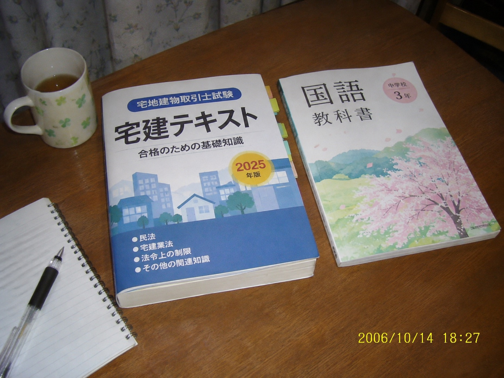

子どもが学校から宿題を出されるのは、当たり前のことです。
では、大人には宿題がないのでしょうか。
仕事から帰って、食事をして、テレビやスマートフォンを見ながらゆっくり過ごす。
もちろん、仕事や家事で疲れているのですから、休息も必要です。
ただ、僕は少し考えてしまいます。
大人自身は何も学んでいないのに、子どもには「勉強しなさい」と言う。それで子どもは納得してくれるのでしょうか。
僕は、勉強は子どもだけがするものではないと思っています。
今回は、大人の学び直しについて、僕の考えをお話しします。
大人の学び直しは、資格取得や転職のためだけではない
近年、「リスキリング」や「学び直し」という言葉を耳にする機会があります。
文部科学省が2026年11月に公表した調査によると、2024年度に履修証明プログラムを開設していた大学は244校、この項目の回答対象787大学の31.0％でした。
履修証明プログラムとは、大学などが提供する、まとまった内容の学習プログラムです。社会人の学び直しにも活用されています。
こうした制度を利用して新しい知識や技能を身につけるのも、一つの方法でしょう。
ただ、僕が考える大人の学びは、資格取得や転職、副業のためだけのものではありません。
本を読むこと。ニュースを見て疑問に思ったことを調べること。興味を持った出来事について、歴史や背景まで知ろうとすること。
そうした日常の中にも、学ぶ機会はいくらでもあります。
何かの資格や収入につながらなくても、自分の知識や教養を広げることには十分な価値があると、僕は考えています。
ニュースの背景を調べることも、立派な勉強
例えば、2026年に続いているアメリカとイランの戦争。
ニュースで戦況を知るだけでなく、「なぜ、これほど長引いているのだろう？」と考えてみてください。
その理由を調べ始めると、さまざまな疑問が出てきます。
イランは、どのような政治体制の国なのか。
アメリカとイランは、なぜ対立するようになったのか。
両国の歴史的な関係はどうなっているのか。
アメリカ国内の政治や経済事情は、戦争の継続にどのような影響を与えているのか。
一つ調べると、また別の疑問が生まれます。そこから歴史や政治、経済へと学びが広がっていくのです。
そして、もう一つ忘れてはならないのが宗教です。
僕は、日本で暮らしていると、国際情勢を考える際に宗教の影響を見落としがちになるのではないかと感じています。
例えば、イスラエルとパレスチナの問題や、ハマスをめぐる対立です。
ハマスの思想には、イスラム主義とパレスチナ民族主義の両方が含まれています。その背景を理解するには、宗教だけでなく、民族や領土、政治、長い歴史にも目を向ける必要があります。
宗教的な信念や価値観は、経済的な損得だけでは説明できないこともあるでしょう。
僕は、こうした問題を考えるとき、合理的な損得勘定だけで理解しようとしても、見えてこないものがあると感じます。
もちろん、国際情勢は複雑で、戦争が続く理由を一つに絞ることはできません。報道や資料によって説明が異なる場合もあります。
だからこそ、調べる価値があるのです。
複数の情報源を確認し、事実として分かっていることと、自分の考えを区別する。分からないことがあれば、さらに調べてみる。
そうして学んだ内容を自分なりに整理し、なぜその出来事が起きているのかを、自分の言葉で説明できるところまで学ぶことに価値があると思っています。
ニュースを見て「大変だな」で終わらせるのではなく、その背景まで理解しようとする。
これも立派な勉強ではないでしょうか。
子どもに勉強してほしいなら、まず大人が学ぶ姿を見せよう
子どもには勉強するように言うのに、大人自身は何も学ばない。
それでは、少し説得力に欠けるのではないでしょうか。
もちろん、親が勉強する姿を見せれば、必ず子どもも勉強するようになるわけではありません。
それでも、親が読書をしたり、知らないことを調べたりする姿を見て、子どもが学ぶことに興味を持つかもしれません。
例えば、ニュースを見ながら「どうしてこんなことが起きたんだろう？」と考え、一緒に調べてみる。
調べた内容を話しているうちに、子どもから別の質問が出てくるかもしれません。
そんなやり取りが、家庭の中で学ぶきっかけになればよいと思います。
「勉強しなさい」と言葉で伝えるだけでなく、自分自身も学んでいる姿を見せる。
僕は、そういう大人でありたいと考えています。
大人の勉強は何から始める？ まずは読書がおすすめ
「学び直しと言われても、何から始めればいいか分からない」
そんな人に僕がおすすめしたいのは、読書です。
難しい専門書を読む必要はありません。小説でも歴史でも、自分が興味を持てる内容なら何でも構いません。
何を読もうか迷ったら、もっと身近な教材があります。
それは、子どもの学校の教科書です。

例えば、国語の教科書に載っている小説や物語。
大人になってから読むと、子どもの頃とは違った発見があるかもしれません。
教科書には、作品の一部だけが掲載されていることもあります。
面白いと感じたら、原作を購入したり、図書館で借りたりして続きを読んでみるのです。
教科書の続きを読んで、子どもに話してみよう
例えば、お子さんが国語の授業で読んでいる作品。
親がその原作を読んでいたら、こんな会話ができるかもしれません。
「その話、実は続きがあるんだよ」
「最後はどうなると思う？」
教科書の内容をきっかけに、親子で作品について話してみるのです。
子どもから「そんなことまで知っているの？」と言われたら、少しは親としての威厳も示せるかもしれません（笑）。
もちろん、子どもが必ず興味を持つとは限りません。
それでも、子どもが学校で学んでいることに大人も関心を持ち、一緒に話す機会を作ることには意味があると思います。
特別な教材を購入しなくても始められるのも魅力です。
子どもの教科書は、大人にとっても身近な学びの入り口なのです。
大人にも、自分で決める宿題がある
学校の宿題には、提出期限があります。
一方、大人の学びには、誰かが決めた期限も提出先もないことが多いでしょう。
だからこそ、自分で学ぶことを見つけ、行動する姿勢が大切だと思います。
例えば、今日からこんなことを始めてみてはどうでしょう。
- 1日10分、本を読む。
- 気になったニュースについて、背景や歴史を調べる。
- 子どもの教科書を開き、興味のある作品を読んでみる。
- 調べた内容を、誰かに自分の言葉で説明してみる。
最初から大きな目標を立てる必要はありません。
大切なのは、知りたいと思ったことを、そのままにしないことです。
そして、調べて分かったつもりになるだけでなく、学んだ内容を自分の言葉で説明してみる。
そうすることで、自分が何を理解していて、何がまだ分かっていないのかにも気づけるでしょう。
子どもに勉強してほしいのであれば、僕たち大人も学ぶことを楽しみたいものです。
大人の宿題は、誰かに出されるものではなく、自分で見つけるもの。
子どもに「勉強しなさい」と言う前に、今日は自分自身が何を学んだのか、振り返ってみませんか。